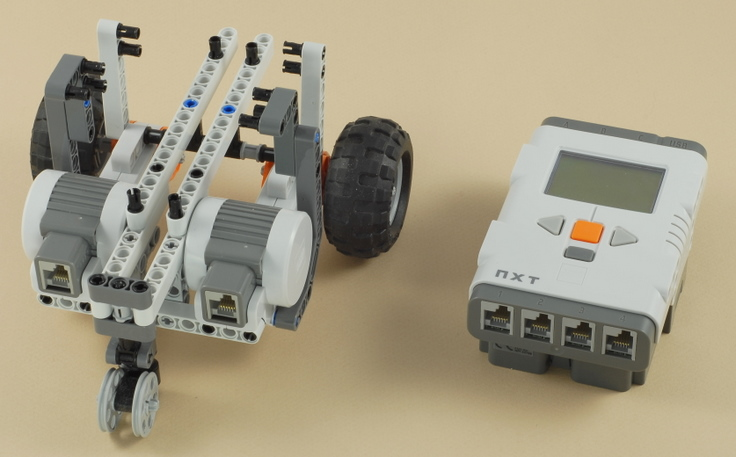
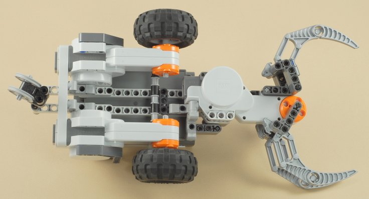
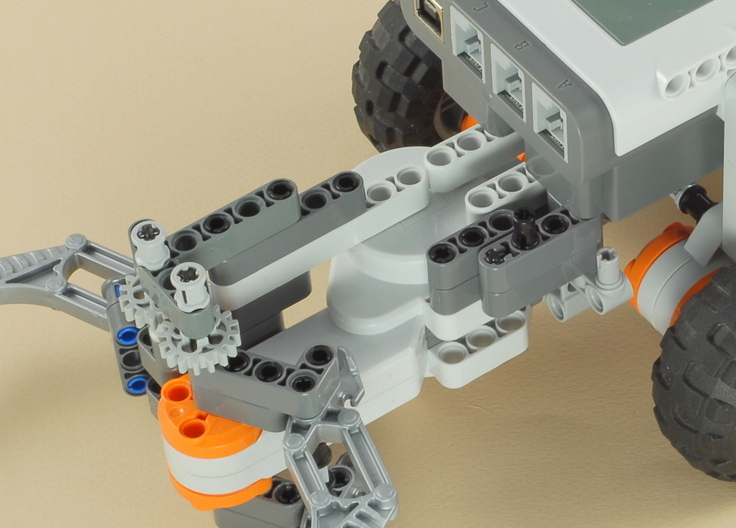
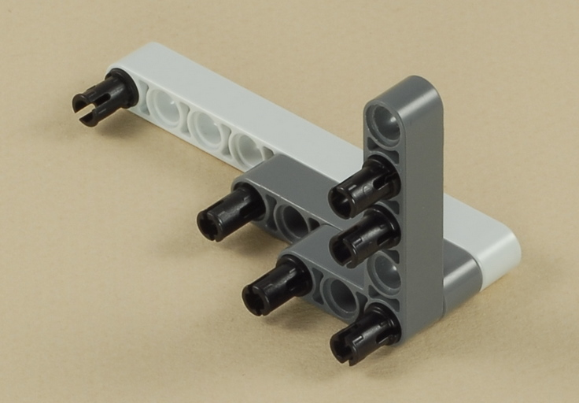

Fun Projects for your LEGO� MINDSTORMS� NXT!
|
|
Fun Projects for your LEGO� MINDSTORMS� NXT! |
| Claw Car with Game Controller |
|

1-23
|
Start by building the Car with Game Controller project (using the Castor Bot). Click the picture for building instructions. |

|
|
24
This project needs the NXT brick pointing the
opposite way from the Castor Bot project, so in this step you need to
remove the NXT brick, turn it around, then re-attach it. To do
this:
|
|

|
25

26
27
|
Note: When attaching the second claw to the motor, you will need to rotate the small gray axle slightly until it lines up with the cross hole on the other claw. |
28

29
30

31
|
Important: Make sure both sides of the claw are open all the way before putting the gears on. This will ensure that the claw will open and close symmetrically. |
32
|
Important: Make sure both sides of the claw are still open all the way before putting on the L-shaped beam. |
33
34
|
Attach the claw to the bottom of the robot as shown below. There are five black pegs that need to go in. |

|
This is what it should look like from the top when the claw is properly attached. |

35

36
|
Re-attach the two motor wires. Looking at the NXT brick right-side-up, the left motor should attach to port B on the NXT, and the right wire should attach to port C on the NXT. You can route the wires under the chassis side beam to keep them out of the way, as shown below. |
37
|
Use the shortest wire to attach the claw motor to port A on the NXT brick. You can route the wire under the round chassis cross support to keep it off the ground, as shown below. |
38
|
Reattach the two controller wires to the NXT brick, making sure that the light sensor wire goes to port 3 on the NXT and the the touch sensor wire goes to port 4 on the NXT. |
| Claw Car
with Game Controller Programming Use the program Claw Control for the Claw Car with Game Controller. This program is based on the Game_Control program that is used for the Car with Game Controller project and then adds a way to open and close the claw using the touch sensor. The controller must be calibrated before it can be used, so the program starts with a calibration sequence. See the instructions below for details. |
Using the Controller for the Claw Car
| The remote control for this project is based on the
controller used for the Car
with Game Controller project. The control must be calibrated
before you can drive with it. See the instructions for
Using the Game Controller
to learn how to calibrate the control and drive the robot using it. The Claw Control program for this project adds a way to open and close the claw using the touch sensor on the control. But the touch sensor is also used to tell the robot to drive forward, so a little trick is needed to tell the difference between the two:
Because of this trick, there is a slight delay before the robot will drive forward when you press the touch sensor, while the program is waiting to see if you release the button soon enough or not. This same trick is often used in the graphical user interface of desktop computer programs to tell the difference between a "click" and a "drag" of the mouse. |
Challenges
|
|
Copyright
�
2007-2009 by Dave Parker. All rights reserved. |